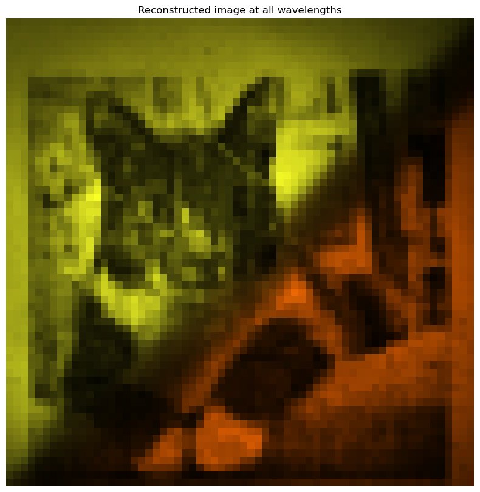
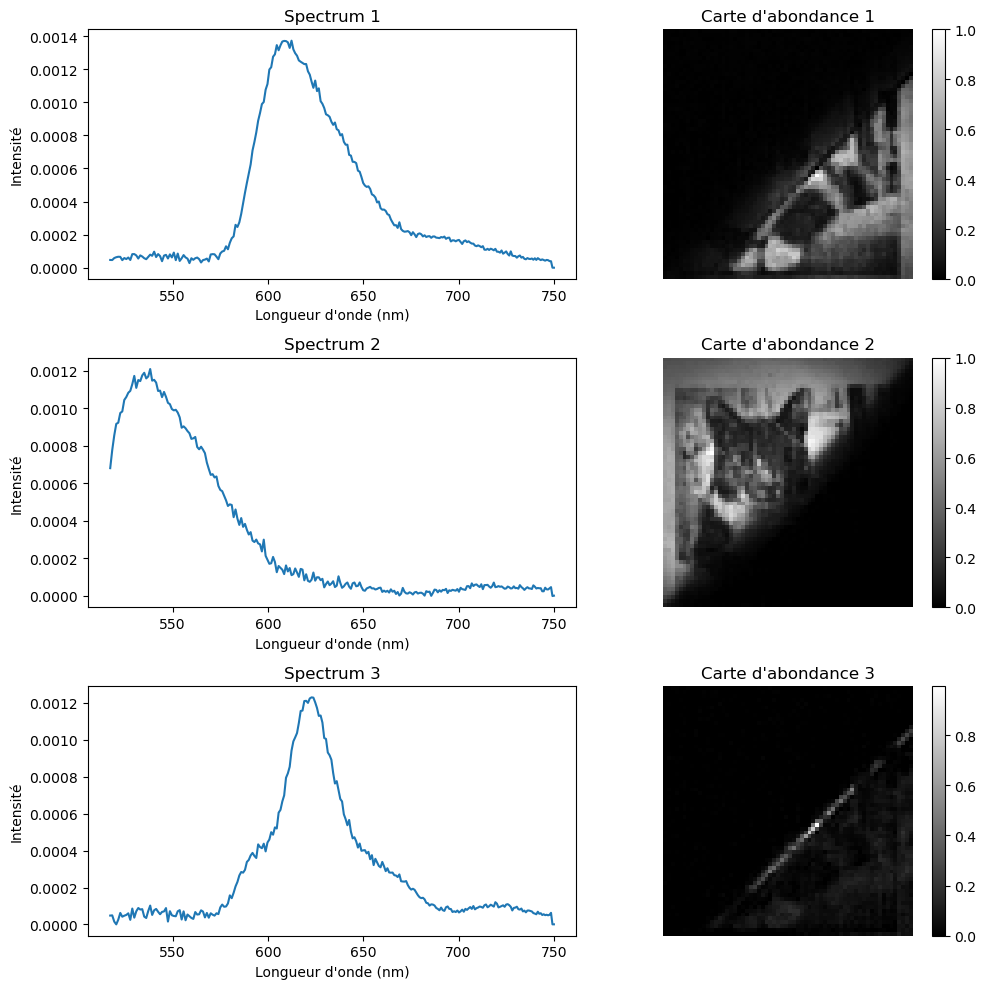

Unable to display output for mime type(s): application/vnd.plotly.v1+jsonUnable to display output for mime type(s): application/vnd.plotly.v1+jsonCode for generating the cat image beforehand, to avoid reconstruction at runtime for slides (will still do the NMF live)

0 [0, 0, 0]
1 [1688, 0, 0]
2 [1688, 2547, 0]
Returning [1688, 2547, 1816] as estimated pure pixel indices
Slide adaptation of the code for the HRSI
--------------------------------------------------------------------------- ValueError Traceback (most recent call last) Cell In[3], line 87 83 fig = go.Figure() 85 for q in range(r): 86 fig.add_trace( ---> 87 go.Scatter( 88 x=x, 89 y=Wall[0, :, q], 90 mode="lines", 91 name=f"Component {q+1}", 92 line=dict(color=colors[q]), 93 width=1200, 94 height=350, 95 ) 96 ) 98 # -------------------------------------------------- 99 # Slider steps 100 # -------------------------------------------------- 102 steps = [] File ~/mambaforge/envs/hdr/lib/python3.11/site-packages/plotly/graph_objs/_scatter.py:2749, in Scatter.__init__(self, arg, alignmentgroup, cliponaxis, connectgaps, customdata, customdatasrc, dx, dy, error_x, error_y, fill, fillcolor, fillgradient, fillpattern, groupnorm, hoverinfo, hoverinfosrc, hoverlabel, hoveron, hovertemplate, hovertemplatesrc, hovertext, hovertextsrc, ids, idssrc, legend, legendgroup, legendgrouptitle, legendrank, legendwidth, line, marker, meta, metasrc, mode, name, offsetgroup, opacity, orientation, selected, selectedpoints, showlegend, stackgaps, stackgroup, stream, text, textfont, textposition, textpositionsrc, textsrc, texttemplate, texttemplatesrc, uid, uirevision, unselected, visible, x, x0, xaxis, xcalendar, xhoverformat, xperiod, xperiod0, xperiodalignment, xsrc, y, y0, yaxis, ycalendar, yhoverformat, yperiod, yperiod0, yperiodalignment, ysrc, zorder, **kwargs) 2747 self._props["type"] = "scatter" 2748 arg.pop("type", None) -> 2749 self._process_kwargs(**dict(arg, **kwargs)) 2750 self._skip_invalid = False File ~/mambaforge/envs/hdr/lib/python3.11/site-packages/plotly/basedatatypes.py:4451, in BasePlotlyType._process_kwargs(self, **kwargs) 4449 self[k] = v 4450 elif not self._skip_invalid: -> 4451 raise err ValueError: Invalid property specified for object of type plotly.graph_objs.Scatter: 'width' Did you mean "ids"? Valid properties: alignmentgroup Set several traces linked to the same position axis or matching axes to the same alignmentgroup. This controls whether bars compute their positional range dependently or independently. cliponaxis Determines whether or not markers and text nodes are clipped about the subplot axes. To show markers and text nodes above axis lines and tick labels, make sure to set `xaxis.layer` and `yaxis.layer` to *below traces*. connectgaps Determines whether or not gaps (i.e. {nan} or missing values) in the provided data arrays are connected. customdata Assigns extra data each datum. This may be useful when listening to hover, click and selection events. Note that, "scatter" traces also appends customdata items in the markers DOM elements customdatasrc Sets the source reference on Chart Studio Cloud for `customdata`. dx Sets the x coordinate step. See `x0` for more info. dy Sets the y coordinate step. See `y0` for more info. error_x :class:`plotly.graph_objects.scatter.ErrorX` instance or dict with compatible properties error_y :class:`plotly.graph_objects.scatter.ErrorY` instance or dict with compatible properties fill Sets the area to fill with a solid color. Defaults to "none" unless this trace is stacked, then it gets "tonexty" ("tonextx") if `orientation` is "v" ("h") Use with `fillcolor` if not "none". "tozerox" and "tozeroy" fill to x=0 and y=0 respectively. "tonextx" and "tonexty" fill between the endpoints of this trace and the endpoints of the trace before it, connecting those endpoints with straight lines (to make a stacked area graph); if there is no trace before it, they behave like "tozerox" and "tozeroy". "toself" connects the endpoints of the trace (or each segment of the trace if it has gaps) into a closed shape. "tonext" fills the space between two traces if one completely encloses the other (eg consecutive contour lines), and behaves like "toself" if there is no trace before it. "tonext" should not be used if one trace does not enclose the other. Traces in a `stackgroup` will only fill to (or be filled to) other traces in the same group. With multiple `stackgroup`s or some traces stacked and some not, if fill-linked traces are not already consecutive, the later ones will be pushed down in the drawing order. fillcolor Sets the fill color. Defaults to a half-transparent variant of the line color, marker color, or marker line color, whichever is available. If fillgradient is specified, fillcolor is ignored except for setting the background color of the hover label, if any. fillgradient Sets a fill gradient. If not specified, the fillcolor is used instead. fillpattern Sets the pattern within the marker. groupnorm Only relevant when `stackgroup` is used, and only the first `groupnorm` found in the `stackgroup` will be used - including if `visible` is "legendonly" but not if it is `false`. Sets the normalization for the sum of this `stackgroup`. With "fraction", the value of each trace at each location is divided by the sum of all trace values at that location. "percent" is the same but multiplied by 100 to show percentages. If there are multiple subplots, or multiple `stackgroup`s on one subplot, each will be normalized within its own set. hoverinfo Determines which trace information appear on hover. If `none` or `skip` are set, no information is displayed upon hovering. But, if `none` is set, click and hover events are still fired. hoverinfosrc Sets the source reference on Chart Studio Cloud for `hoverinfo`. hoverlabel :class:`plotly.graph_objects.scatter.Hoverlabel` instance or dict with compatible properties hoveron Do the hover effects highlight individual points (markers or line points) or do they highlight filled regions? If the fill is "toself" or "tonext" and there are no markers or text, then the default is "fills", otherwise it is "points". hovertemplate Template string used for rendering the information that appear on hover box. Note that this will override `hoverinfo`. Variables are inserted using %{variable}, for example "y: %{y}" as well as %{xother}, {%_xother}, {%_xother_}, {%xother_}. When showing info for several points, "xother" will be added to those with different x positions from the first point. An underscore before or after "(x|y)other" will add a space on that side, only when this field is shown. Numbers are formatted using d3-format's syntax %{variable:d3-format}, for example "Price: %{y:$.2f}". https://github.com/d3/d3-format/tree/v1.4.5#d3-format for details on the formatting syntax. Dates are formatted using d3-time-format's syntax %{variable|d3-time-format}, for example "Day: %{2019-01-01|%A}". https://github.com/d3/d3-time- format/tree/v2.2.3#locale_format for details on the date formatting syntax. The variables available in `hovertemplate` are the ones emitted as event data described at this link https://plotly.com/javascript/plotlyjs-events/#event- data. Additionally, every attributes that can be specified per-point (the ones that are `arrayOk: true`) are available. Anything contained in tag `<extra>` is displayed in the secondary box, for example "<extra>{fullData.name}</extra>". To hide the secondary box completely, use an empty tag `<extra></extra>`. hovertemplatesrc Sets the source reference on Chart Studio Cloud for `hovertemplate`. hovertext Sets hover text elements associated with each (x,y) pair. If a single string, the same string appears over all the data points. If an array of string, the items are mapped in order to the this trace's (x,y) coordinates. To be seen, trace `hoverinfo` must contain a "text" flag. hovertextsrc Sets the source reference on Chart Studio Cloud for `hovertext`. ids Assigns id labels to each datum. These ids for object constancy of data points during animation. Should be an array of strings, not numbers or any other type. idssrc Sets the source reference on Chart Studio Cloud for `ids`. legend Sets the reference to a legend to show this trace in. References to these legends are "legend", "legend2", "legend3", etc. Settings for these legends are set in the layout, under `layout.legend`, `layout.legend2`, etc. legendgroup Sets the legend group for this trace. Traces and shapes part of the same legend group hide/show at the same time when toggling legend items. legendgrouptitle :class:`plotly.graph_objects.scatter.Legendgrouptitle` instance or dict with compatible properties legendrank Sets the legend rank for this trace. Items and groups with smaller ranks are presented on top/left side while with "reversed" `legend.traceorder` they are on bottom/right side. The default legendrank is 1000, so that you can use ranks less than 1000 to place certain items before all unranked items, and ranks greater than 1000 to go after all unranked items. When having unranked or equal rank items shapes would be displayed after traces i.e. according to their order in data and layout. legendwidth Sets the width (in px or fraction) of the legend for this trace. line :class:`plotly.graph_objects.scatter.Line` instance or dict with compatible properties marker :class:`plotly.graph_objects.scatter.Marker` instance or dict with compatible properties meta Assigns extra meta information associated with this trace that can be used in various text attributes. Attributes such as trace `name`, graph, axis and colorbar `title.text`, annotation `text` `rangeselector`, `updatemenues` and `sliders` `label` text all support `meta`. To access the trace `meta` values in an attribute in the same trace, simply use `%{meta[i]}` where `i` is the index or key of the `meta` item in question. To access trace `meta` in layout attributes, use `%{data[n[.meta[i]}` where `i` is the index or key of the `meta` and `n` is the trace index. metasrc Sets the source reference on Chart Studio Cloud for `meta`. mode Determines the drawing mode for this scatter trace. If the provided `mode` includes "text" then the `text` elements appear at the coordinates. Otherwise, the `text` elements appear on hover. If there are less than 20 points and the trace is not stacked then the default is "lines+markers". Otherwise, "lines". name Sets the trace name. The trace name appears as the legend item and on hover. offsetgroup Set several traces linked to the same position axis or matching axes to the same offsetgroup where bars of the same position coordinate will line up. opacity Sets the opacity of the trace. orientation Only relevant in the following cases: 1. when `scattermode` is set to "group". 2. when `stackgroup` is used, and only the first `orientation` found in the `stackgroup` will be used - including if `visible` is "legendonly" but not if it is `false`. Sets the stacking direction. With "v" ("h"), the y (x) values of subsequent traces are added. Also affects the default value of `fill`. selected :class:`plotly.graph_objects.scatter.Selected` instance or dict with compatible properties selectedpoints Array containing integer indices of selected points. Has an effect only for traces that support selections. Note that an empty array means an empty selection where the `unselected` are turned on for all points, whereas, any other non-array values means no selection all where the `selected` and `unselected` styles have no effect. showlegend Determines whether or not an item corresponding to this trace is shown in the legend. stackgaps Only relevant when `stackgroup` is used, and only the first `stackgaps` found in the `stackgroup` will be used - including if `visible` is "legendonly" but not if it is `false`. Determines how we handle locations at which other traces in this group have data but this one does not. With *infer zero* we insert a zero at these locations. With "interpolate" we linearly interpolate between existing values, and extrapolate a constant beyond the existing values. stackgroup Set several scatter traces (on the same subplot) to the same stackgroup in order to add their y values (or their x values if `orientation` is "h"). If blank or omitted this trace will not be stacked. Stacking also turns `fill` on by default, using "tonexty" ("tonextx") if `orientation` is "h" ("v") and sets the default `mode` to "lines" irrespective of point count. You can only stack on a numeric (linear or log) axis. Traces in a `stackgroup` will only fill to (or be filled to) other traces in the same group. With multiple `stackgroup`s or some traces stacked and some not, if fill-linked traces are not already consecutive, the later ones will be pushed down in the drawing order. stream :class:`plotly.graph_objects.scatter.Stream` instance or dict with compatible properties text Sets text elements associated with each (x,y) pair. If a single string, the same string appears over all the data points. If an array of string, the items are mapped in order to the this trace's (x,y) coordinates. If trace `hoverinfo` contains a "text" flag and "hovertext" is not set, these elements will be seen in the hover labels. textfont Sets the text font. textposition Sets the positions of the `text` elements with respects to the (x,y) coordinates. textpositionsrc Sets the source reference on Chart Studio Cloud for `textposition`. textsrc Sets the source reference on Chart Studio Cloud for `text`. texttemplate Template string used for rendering the information text that appear on points. Note that this will override `textinfo`. Variables are inserted using %{variable}, for example "y: %{y}". Numbers are formatted using d3-format's syntax %{variable:d3-format}, for example "Price: %{y:$.2f}". https://github.com/d3/d3-format/tree/v1.4.5#d3-format for details on the formatting syntax. Dates are formatted using d3-time-format's syntax %{variable|d3-time-format}, for example "Day: %{2019-01-01|%A}". https://github.com/d3/d3-time- format/tree/v2.2.3#locale_format for details on the date formatting syntax. Every attributes that can be specified per-point (the ones that are `arrayOk: true`) are available. texttemplatesrc Sets the source reference on Chart Studio Cloud for `texttemplate`. uid Assign an id to this trace, Use this to provide object constancy between traces during animations and transitions. uirevision Controls persistence of some user-driven changes to the trace: `constraintrange` in `parcoords` traces, as well as some `editable: true` modifications such as `name` and `colorbar.title`. Defaults to `layout.uirevision`. Note that other user-driven trace attribute changes are controlled by `layout` attributes: `trace.visible` is controlled by `layout.legend.uirevision`, `selectedpoints` is controlled by `layout.selectionrevision`, and `colorbar.(x|y)` (accessible with `config: {editable: true}`) is controlled by `layout.editrevision`. Trace changes are tracked by `uid`, which only falls back on trace index if no `uid` is provided. So if your app can add/remove traces before the end of the `data` array, such that the same trace has a different index, you can still preserve user-driven changes if you give each trace a `uid` that stays with it as it moves. unselected :class:`plotly.graph_objects.scatter.Unselected` instance or dict with compatible properties visible Determines whether or not this trace is visible. If "legendonly", the trace is not drawn, but can appear as a legend item (provided that the legend itself is visible). x Sets the x coordinates. x0 Alternate to `x`. Builds a linear space of x coordinates. Use with `dx` where `x0` is the starting coordinate and `dx` the step. xaxis Sets a reference between this trace's x coordinates and a 2D cartesian x axis. If "x" (the default value), the x coordinates refer to `layout.xaxis`. If "x2", the x coordinates refer to `layout.xaxis2`, and so on. xcalendar Sets the calendar system to use with `x` date data. xhoverformat Sets the hover text formatting rulefor `x` using d3 formatting mini-languages which are very similar to those in Python. For numbers, see: https://github.com/d3/d3-format/tree/v1.4.5#d3-format. And for dates see: https://github.com/d3/d3-time- format/tree/v2.2.3#locale_format. We add two items to d3's date formatter: "%h" for half of the year as a decimal number as well as "%{n}f" for fractional seconds with n digits. For example, *2016-10-13 09:15:23.456* with tickformat "%H~%M~%S.%2f" would display *09~15~23.46*By default the values are formatted using `xaxis.hoverformat`. xperiod Only relevant when the axis `type` is "date". Sets the period positioning in milliseconds or "M<n>" on the x axis. Special values in the form of "M<n>" could be used to declare the number of months. In this case `n` must be a positive integer. xperiod0 Only relevant when the axis `type` is "date". Sets the base for period positioning in milliseconds or date string on the x0 axis. When `x0period` is round number of weeks, the `x0period0` by default would be on a Sunday i.e. 2000-01-02, otherwise it would be at 2000-01-01. xperiodalignment Only relevant when the axis `type` is "date". Sets the alignment of data points on the x axis. xsrc Sets the source reference on Chart Studio Cloud for `x`. y Sets the y coordinates. y0 Alternate to `y`. Builds a linear space of y coordinates. Use with `dy` where `y0` is the starting coordinate and `dy` the step. yaxis Sets a reference between this trace's y coordinates and a 2D cartesian y axis. If "y" (the default value), the y coordinates refer to `layout.yaxis`. If "y2", the y coordinates refer to `layout.yaxis2`, and so on. ycalendar Sets the calendar system to use with `y` date data. yhoverformat Sets the hover text formatting rulefor `y` using d3 formatting mini-languages which are very similar to those in Python. For numbers, see: https://github.com/d3/d3-format/tree/v1.4.5#d3-format. And for dates see: https://github.com/d3/d3-time- format/tree/v2.2.3#locale_format. We add two items to d3's date formatter: "%h" for half of the year as a decimal number as well as "%{n}f" for fractional seconds with n digits. For example, *2016-10-13 09:15:23.456* with tickformat "%H~%M~%S.%2f" would display *09~15~23.46*By default the values are formatted using `yaxis.hoverformat`. yperiod Only relevant when the axis `type` is "date". Sets the period positioning in milliseconds or "M<n>" on the y axis. Special values in the form of "M<n>" could be used to declare the number of months. In this case `n` must be a positive integer. yperiod0 Only relevant when the axis `type` is "date". Sets the base for period positioning in milliseconds or date string on the y0 axis. When `y0period` is round number of weeks, the `y0period0` by default would be on a Sunday i.e. 2000-01-02, otherwise it would be at 2000-01-01. yperiodalignment Only relevant when the axis `type` is "date". Sets the alignment of data points on the y axis. ysrc Sets the source reference on Chart Studio Cloud for `y`. zorder Sets the layer on which this trace is displayed, relative to other SVG traces on the same subplot. SVG traces with higher `zorder` appear in front of those with lower `zorder`. Did you mean "ids"? Bad property path: width ^^^^^
Running λ = 1.000e-04
Running λ = 2.069e-04
Running λ = 4.281e-04
Running λ = 8.859e-04
Running λ = 1.833e-03
Running λ = 3.793e-03
Running λ = 7.848e-03
Running λ = 1.624e-02
Running λ = 3.360e-02
Running λ = 6.952e-02
Running λ = 1.438e-01
Running λ = 2.976e-01
Running λ = 6.158e-01
Running λ = 1.274e+00
Running λ = 2.637e+00
Running λ = 5.456e+00
Running λ = 1.129e+01
Running λ = 2.336e+01
Running λ = 4.833e+01
Running λ = 1.000e+02Unable to display output for mime type(s): application/vnd.plotly.v1+jsonRunning λ = 1.00e-04
Running λ = 1.40e-01Unable to display output for mime type(s): application/vnd.plotly.v1+jsonUnable to display output for mime type(s): application/vnd.plotly.v1+jsonHDR - Jérémy Cohen - 2026